Methanol example
Matt Moores, Benjamin Moskowitz and Karen Faulds
2026-10-05
Source:vignettes/Methanol.Rmd
Methanol.RmdThere are 3 R functions available in the package serrsBayes for model-based, statistical analysis of spectroscopy:
fitSpectraMCMCfitSpectraSMCfitVoigtPeaksSMC
This vignette will provide recommendations for choosing which function to use for a given purpose. As an example, let’s say I wanted to fit a Raman spectrum of methanol. With a quick Google search, I find that there should be 4 peaks located at wavenumbers 1033 (C-O stretching), 1106 (CH3 rocking), 1149 (CH3 bending), and 1448 cm. However, we know that these peaks can shift slightly due to differences in temperature, pressure, spectrometer calibration, etc. My sample is in the liquid phase, so these peaks will not be exactly Gaussian or Lorentzian, but somewhere in the middle. On the other hand, I don’t want to wait for hours for SMC to finish running.
The first point to emphasise is that fitSpectraMCMC
should not be used for real data. It exists mainly to
illustrate the differences between MCMC and SMC algorithms, so is only
of interest to computational statisticians.
fitSpectraSMC is the fastest method, but can also be
difficult to tune. You need to choose either Lorentzian or Gaussian
broadening functions. You also need to use fixed peak locations and the
results are sensitive to the choice of priors$bl.smooth,
however if you manage to get it working for your data then there is no
real reason to use fitVoigtPeaksSMC.
The main differences in fitVoigtPeaksSMC are as
follows:
- There are 2 scale parameters, and , that control the full-width at half-maximum (FWHM) of the peaks. The broadening profile is a mixture of Gaussian and Lorentzian, also known as a pseudo-Voigt function.
- The peak locations are not fixed. Instead, they are estimated as
parameters of the model. This means that you need to supply informative
prior distributions for the peak locations,
loc.mu(mean) andloc.sd(standard deviation), in wavenumbers . - The underlying SMC algorithm works differently. The main effect of
this is that you should set
priors$bl.smooth = 1if you are usingfitVoigtPeaksSMC, instead ofpriors$bl.smooth=10^11or something like that. The baseline estimation is more robust and easier to tune for “difficult” spectra. - You do not need to set a prior for the amplitudes of the peaks
(
beta.muandbeta.sd). If you leave it out, then a uniform prior will be used by default. However, you can also set informative priors for the amplitude of each peak in the spectrum if that information is available.
Raw Data
The first step is always to read in the spectrum and plot it. Normally I would use the R package hyperSpec for this, but the data that we are going to use is included in the R package serrsBayes:
library(serrsBayes)
data("methanol", package = "serrsBayes")
wavenumbers <- methanol$wavenumbers
spectra <- methanol$spectra
peakLocations <- c(1033, 1106, 1149, 1448)
nPK <- length(peakLocations)
pkIdx <- numeric(nPK)
for (i in 1:nPK) {
pkIdx[i] <- which.min(wavenumbers < peakLocations[i])
}
nWL <- length(wavenumbers)
plot(wavenumbers, spectra[1,], type='l', col=4,
xlab=expression(paste("Raman shift (cm"^{-1}, ")")), ylab="Intensity (a.u.)", main="Observed Raman spectrum for methanol")
points(peakLocations, spectra[1,pkIdx], cex=2, col=2)
text(peakLocations + c(100,20,40,0), spectra[1,pkIdx] + c(0,700,400,700), labels=peakLocations)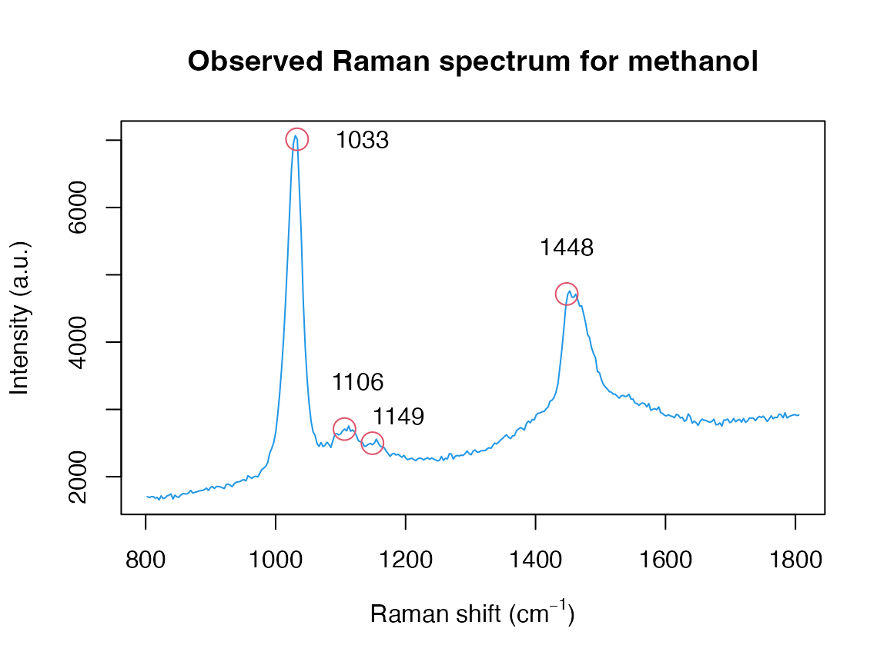
fitSpectraSMC
We can use exactly the same priors as given in the package README:
lPriors <- list(scale.mu=log(11.6) - (0.4^2)/2, scale.sd=0.4, bl.smooth=10^11, bl.knots=50,
beta.mu=5000, beta.sd=5000, noise.sd=200, noise.nu=4)
tm <- system.time(result <- fitSpectraSMC(wavenumbers, spectra, peakLocations, lPriors))## [1] "54.2650666666667 minutes"We can see there is a problem with the model fit:
samp.idx <- sample.int(length(result$weights), 200, prob=result$weights)
plot(wavenumbers, spectra[1,], type='l', lwd=3,
xlab=expression(paste("Raman shift (cm"^{-1}, ")")), ylab="Intensity (a.u.)", main="Fitted model with Lorentzian peaks")
for (pt in samp.idx) {
bl.est <- result$basis %*% result$alpha[,1,pt]
lines(wavenumbers, bl.est, col="#C3000009")
lines(wavenumbers, bl.est + result$expFn[pt,], col="#00C30009")
}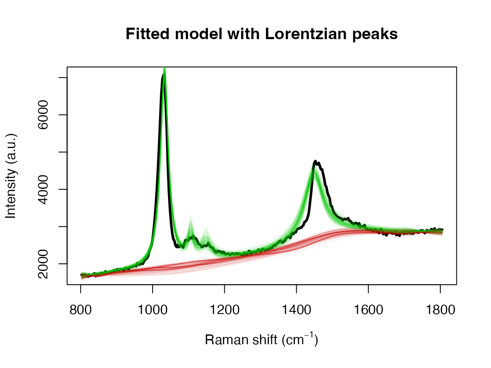
Adjusting the priors is not going to fix this. The underlying issue
is that the peak location of 1448
cm
doesn’t match our observed data. Even a small difference in the location
of one of the peaks can adversely effect the entire model fit. This is
the kind of issue that the function fitVoigtPeaksSMC is
designed to handle.
fitVoigtPeaksSMC
The priors here are very similar to what we used for TAMRA in the
other vignette. However, we don’t need as many bl.knots
because we have a narrower range of wavenumbers. Instead, we will use
bl.knots = 50, the same as what we used for
fitSpectraSMC above.
lPriors2 <- list(loc.mu=peakLocations, loc.sd=rep(50,nPK), scaG.mu=log(16.47) - (0.34^2)/2,
scaG.sd=0.34, scaL.mu=log(25.27) - (0.4^2)/2, scaL.sd=0.4, noise.nu=5,
noise.sd=50, bl.smooth=1, bl.knots=50)
data("result2", package = "serrsBayes")
if(!exists("result2")) {
tm2 <- Sys.time()
result2 <- fitVoigtPeaksSMC(wavenumbers, spectra, lPriors2, npart=3000, rate=0.499,mcSteps=50)
result2$time <- Sys.time() - tm2
save(result2, file="Figure 2/result2.rda")
}fitVoigtPeaksSMC takes more than twice as long to fit
the model, due to estimating the additional parameters. However, we
obtain a much better fit to the observed spectrum:
## [1] "7.083923 mins for 19 SMC iterations."
samp.idx <- 1:nrow(result2$location)
plot(wavenumbers, spectra[1,], type='l', lwd=3,
xlab=expression(paste("Raman shift (cm"^{-1}, ")")), ylab="Intensity (a.u.)", main="Fitted model with Voigt peaks")
samp.mat <- resid.mat <- matrix(0,nrow=length(samp.idx), ncol=nWL)
samp.sigi <- samp.lambda <- numeric(length=nrow(samp.mat))
for (pt in 1:length(samp.idx)) {
k <- samp.idx[pt]
samp.mat[pt,] <- mixedVoigt(result2$location[k,], result2$scale_G[k,],
result2$scale_L[k,], result2$beta[k,], wavenumbers)
samp.sigi[pt] <- result2$sigma[k]
samp.lambda[pt] <- result2$lambda[k]
Obsi <- spectra[1,] - samp.mat[pt,]
g0_Cal <- length(Obsi) * samp.lambda[pt] * result2$priors$bl.precision
gi_Cal <- crossprod(result2$priors$bl.basis) + g0_Cal
mi_Cal <- as.vector(solve(gi_Cal, crossprod(result2$priors$bl.basis, Obsi)))
bl.est <- result2$priors$bl.basis %*% mi_Cal # smoothed residuals = estimated basline
lines(wavenumbers, bl.est, col="#C3000009")
lines(wavenumbers, bl.est + samp.mat[pt,], col="#00C30009")
resid.mat[pt,] <- Obsi - bl.est[,1]
}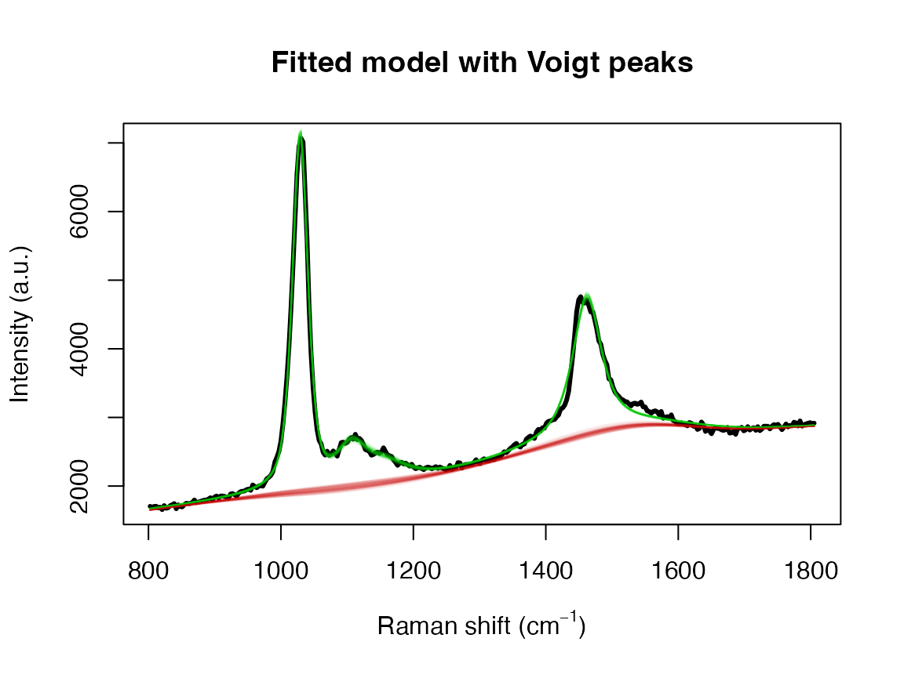
The model fit could be further improved. For example, it appears that there is a shoulder peak around 1550 cm. However, we can see that the posterior distribution for the fourth peak location is very far away from the theoretical value of 1448:
for (j in 1:nPK) {
hist(result2$location[,j], main=paste("Peak",j),
xlab=expression(paste("Peak location (cm"^{-1}, ")")),
freq=FALSE, xlim=range(result2$location[,j], peakLocations[j]))
lines(density(result2$location[,j]), col=4, lty=2, lwd=3)
abline(v=peakLocations[j], col=2, lty=3, lwd=3)
}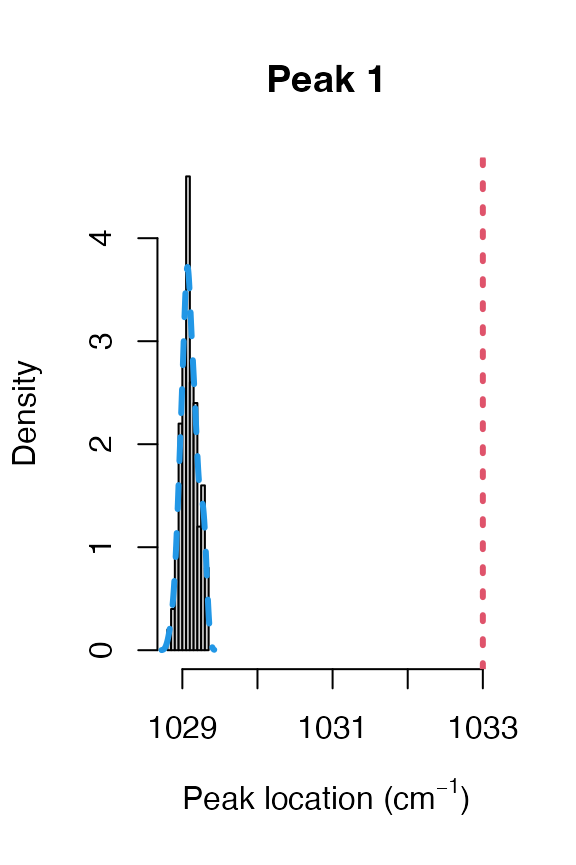
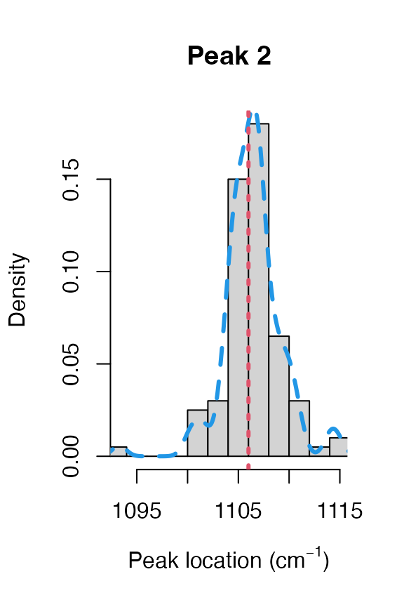
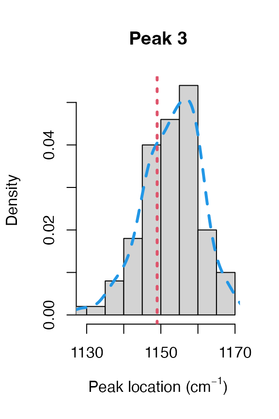
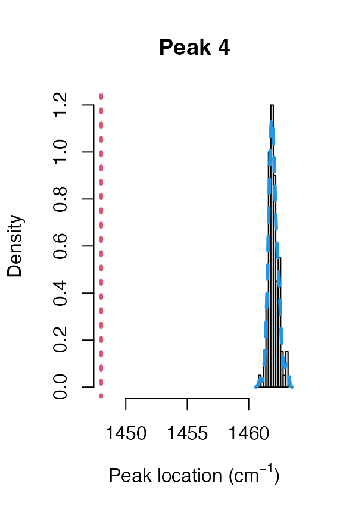
Posteriors for the peak locations.
This explains why the results from fitSpectraSMC were so
poor. You really need to have very precise information about all of the
peak locations in order for that function to perform well. Otherwise,
fitVoigtPeaksSMC will usually give much better fit to the
observed spectrum.
fitSpectraSMC, redux
We can use the posterior from fitVoigtPeaksSMC to obtain
priors for running fitSpectraSMC. This can be useful, for
example, for fitting the model to multiple datasets that were obtained
under the same experimental conditions.
The first question is whether to use Lorentzian or Gaussian
broadening functions. We can transform the posteriors for
and
to obtain a number
between 0 and 1 for each peak, where 0 implies pure Gaussian and 1
implies Lorentzian. The Wikipedia
page provides the equations (Thompson et al.
1987): $$
f_G = 2\psi_G\sqrt{2\log\{2\}} \\
f_L = 2\psi_L \\
f_V \approx 0.5346 f_L + \sqrt{0.2166f_L^2 + f_G^2} \\
f_{total} \approx \left(f_G^5 + 2.69269f_G^4 f_L + 2.42843f_G^3 f_L^2 +
4.47163f_G^2 f_L^3 + 0.07842f_G f_L^4 + f_L^5 \right)^{1/5} \\
\eta \approx 1.33603 \frac{f_L}{f_{total}} - 0.47719
\left(\frac{f_L}{f_{total}} \right)^2 + 0.11116
\left(\frac{f_L}{f_{total}} \right)^3
$$ The above equations are implemented by the function
getVoigtParam:
nPart <- nrow(result2$beta)
result2$voigt <- result2$FWHM <- matrix(nrow=nPart, ncol=nPK)
for (k in 1:nPart) {
result2$voigt[k,] <- getVoigtParam(result2$scale_G[k,], result2$scale_L[k,])
f_G <- 2*result2$scale_G[k,]*sqrt(2*log(2))
f_L <- 2*result2$scale_L[k,]
result2$FWHM[k,] <- 0.5346*f_L + sqrt(0.2166*f_L^2 + f_G^2)
}
for (j in 1:nPK) {
hist(result2$voigt[,j], main=paste("Peak",j),
xlab=expression(eta), freq=FALSE, xlim=c(0,1))
lines(density(result2$voigt[,j]), col=4, lty=2, lwd=3)
}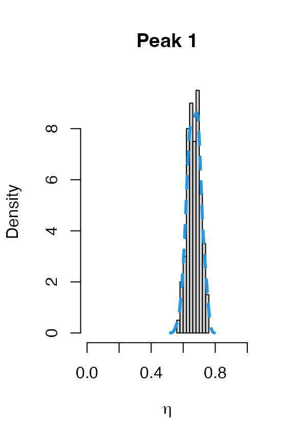
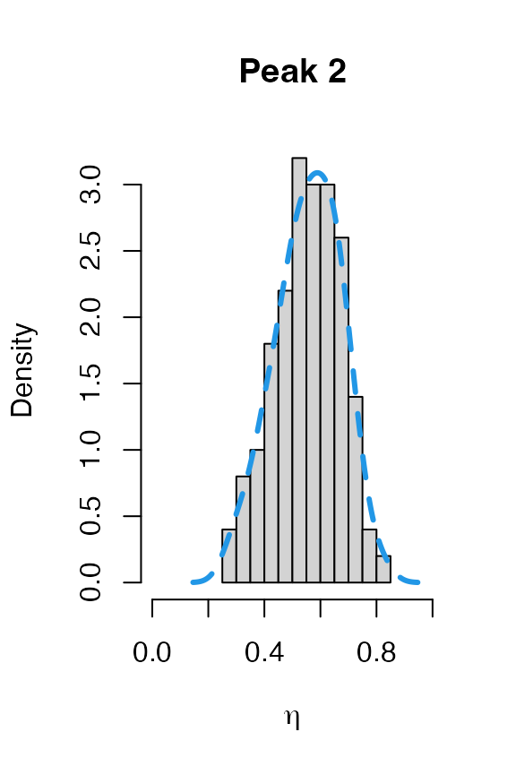
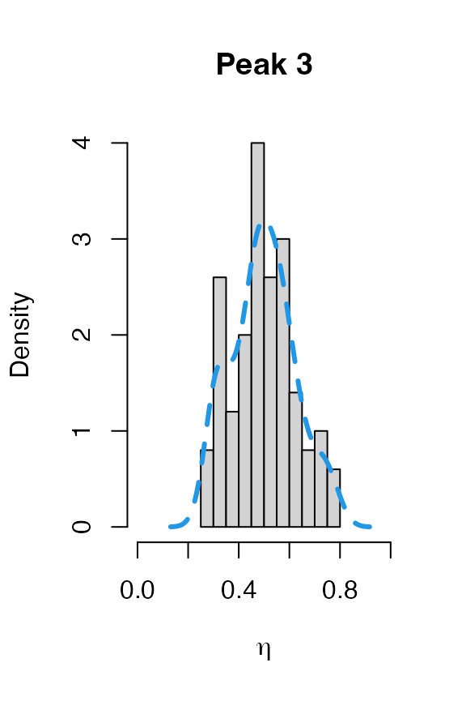
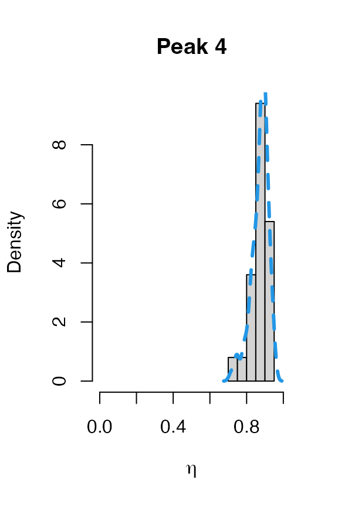
The two largest peaks definitely look Lorentzian, while there is more
uncertainty about the line shape for the smaller peaks. This gives us
confidence that fitSpectraSMC should be able to give us a
good fit to the data, as long as we get the peak locations closer to the
correct values. We can also use moment matching to set informative
priors for the amplitudes:
lPriors3 <- list(scale.mu=log(11.6) - (0.4^2)/2, scale.sd=0.4, bl.smooth=10^11, bl.knots=50, noise.sd=200, noise.nu=4)
lPriors3$beta.mu <- mean(result2$beta)
lPriors3$beta.sd <- sd(result2$beta)
pkLocNew <- c(colMeans(result2$location), 1550)
tm3 <- system.time(result3 <- fitSpectraSMC(wavenumbers, spectra, pkLocNew, lPriors3, npart=2000))## [1] "28.6862833333333 minutes"
samp.idx <- sample.int(length(result3$weights), 200, prob=result3$weights)
plot(wavenumbers, spectra[1,], type='l', lwd=3,
xlab=expression(paste("Raman shift (cm"^{-1}, ")")), ylab="Intensity (a.u.)", main="Fitted model with informative priors")
for (pt in samp.idx) {
bl.est <- result3$basis %*% result3$alpha[,1,pt]
lines(wavenumbers, bl.est, col="#C3000009")
lines(wavenumbers, bl.est + result3$expFn[pt,], col="#00C30009")
}
rug(pkLocNew, col=4, lwd=2)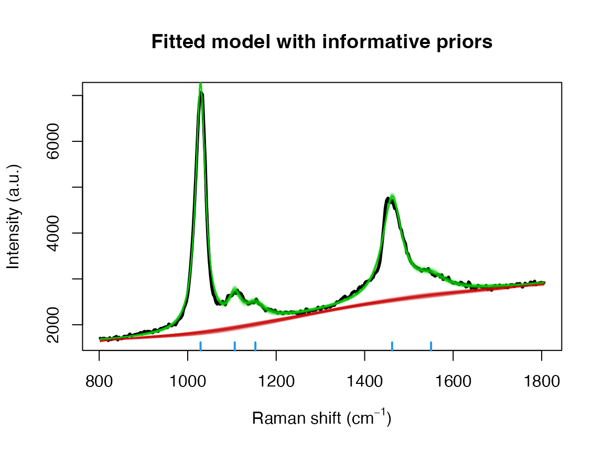